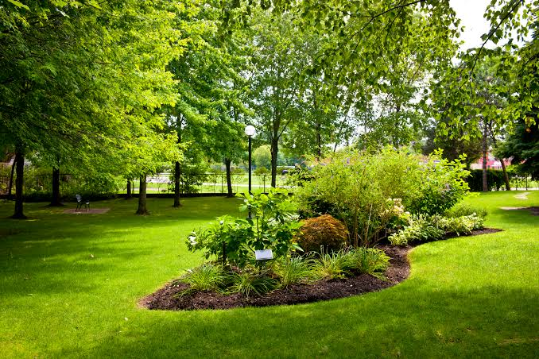
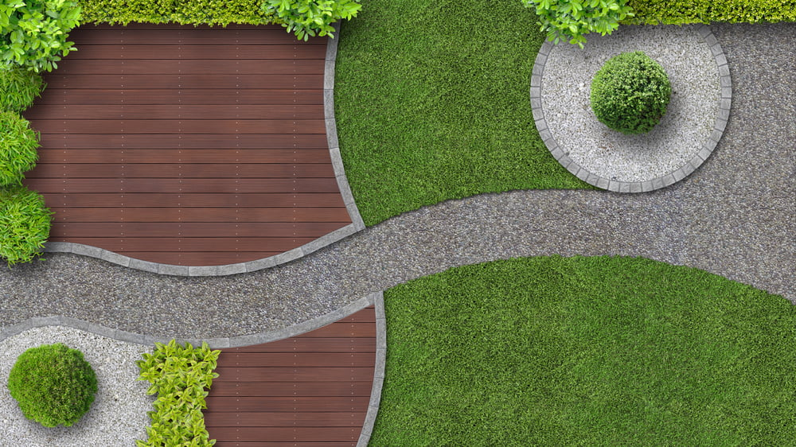
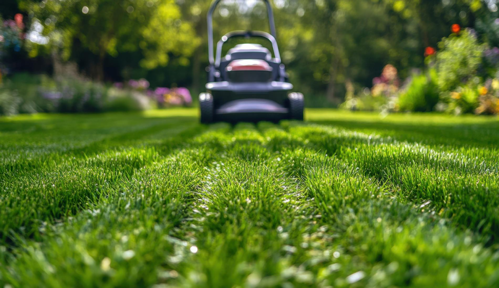
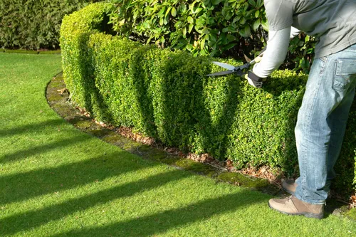
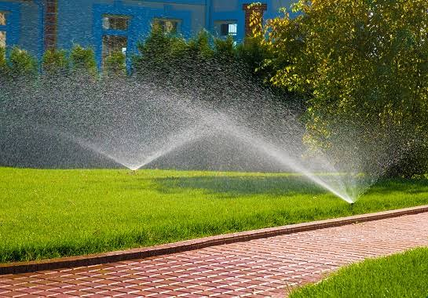
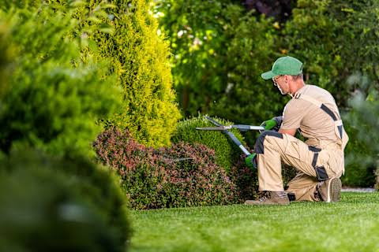

Sublimez et entretenez votre patrimoine végétal. Création de jardins sur-mesure, tonte soignée, élagage et gestion raisonnée de l'eau d'arrosage.
Une équipe de jardiniers paysagistes passionnés pour magnifier vos jardins de copropriétés et parcs d'entreprises à Casablanca et partout au Maroc.

Étude de l'exposition, modélisation 2D/3D et sélection d'espèces florales et d'arbres adaptés au climat marocain et économes en eau.

Plantation de palmiers, oliviers centenaires, arbustes d'ornement, massifs floraux et pose de gazon naturel en rouleau ou semé.

Tonte périodique programmée, bordurage net au rotofil, désherbage manuel et aération du sol pour une pelouse dense et verdoyante.

Taille de formation des haies et massifs, étêtage et élagage en hauteur de grands arbres pour préserver la luminosité et la sécurité.

Installation de réseaux goutte-à-goutte, tuyères escamotables et programmateurs avec sondes d'humidité pour limiter la consommation d'eau.

Fertilisation biologique, amendement organique des sols, traitement préventif contre les ravageurs et réhabilitation de parcs à l'abandon.
Indiquez les particularités de vos extérieurs pour recevoir une proposition d'entretien ou d'aménagement sur-mesure.
Questions courantes sur nos méthodes d'arrosage éco-responsables et la fréquence des interventions.